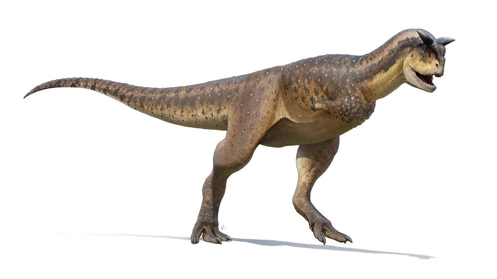
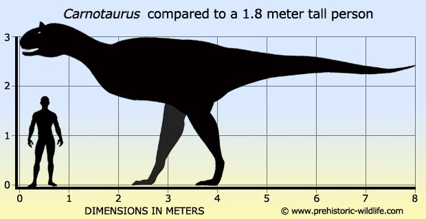

¿Qué es el Carnotaurus?

El Carnotaurus (Carnotaurus sastrei) es uno de los dinosaurios carnívoros más fascinantes y distintivos del período Cretácico Superior, hace aproximadamente 72 a 69 millones de años. Su nombre, que en latín significa "toro carnívoro", hace referencia a los dos cuernos óseos que sobresalían sobre sus ojos, una característica única entre los terópodos de gran tamaño.
Fue descubierto en la Patagonia argentina en 1984 por el paleontólogo José Bonaparte, y hasta la fecha sigue siendo uno de los ejemplares fósiles más completos de un gran terópodo del hemisferio sur.
Características Generales

Una de las características más llamativas del Carnotaurus era su cráneo excepcionalmente corto y robusto en comparación con otros grandes carnívoros. Sus mandíbulas, aunque poderosas, eran relativamente estrechas, lo que ha generado debate científico sobre su método de caza y las presas que atacaba.
Clasificación Taxonómica
- Reino: Animalia
- Filo: Chordata
- Clase: Reptilia (Dinosauria)
- Orden: Saurischia
- Familia: Abelisauridae
- Género: Carnotaurus
- Especie: C. sastrei
Rasgos Únicos

Además de sus cuernos, el Carnotaurus poseía los brazos más reducidos entre todos los grandes terópodos conocidos, incluso más pequeños proporcionalmente que los del Tyrannosaurus rex. Estudios sobre sus huellas e impresiones de piel revelan que estaba cubierto de pequeñas escamas no superpuestas con osteodermos redondeados —protuberancias óseas— distribuidas por los costados y el lomo.
¿Sabías que…?
El Carnotaurus es uno de los pocos dinosaurios de los que se conservan impresiones de piel. Esto nos permite saber que tenía una textura escamosa particular, diferente a la piel de cualquier reptil moderno conocido. También se cree que podía ser un corredor relativamente rápido para su tamaño, gracias a su cola musculosa que actuaba como contrapeso.
Recursos Externos Recomendados
Si deseas profundizar en el estudio del Carnotaurus, aquí tienes tres fuentes de consulta confiables: